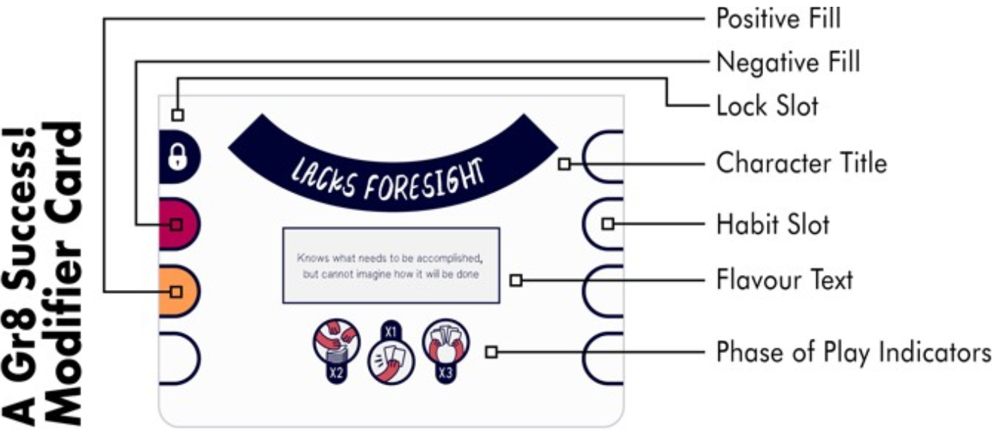

Mechanics used for Learning
The game uses a card-based mechanic where players navigate a narrative journey. They encounter scenarios that require decisions based primarily on soft skills rather than technical knowledge. The game fosters:
- Communication: articulating reasoning to other players.
- Collaboration: Working together to solve scenario-based problems.
- Empathy: Understanding different perspectives in conflict situations.